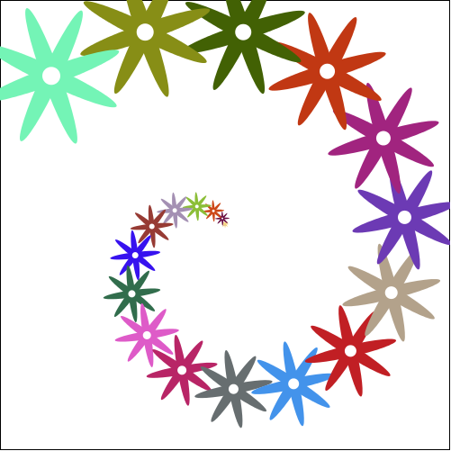

8.6
5 Racket Turtle examples with recursion
5.1 Spiral with changing pen color
Spiral created by recursively increasing the distance that turtle moves. Pen colors are changed according to a list of colors.
(define COLORS1 (list "red" "green" "yellow" "purple")) (define (spiral a x times) (if (< times 0) empty (append (list (forward x)(turn-left a)) (spiral a (+ x 2)(sub1 times))))) (define spiral-image (list (change-pen-size 2) (change-bg-color "black") (change-color COLORS1) (spiral 91 1 152)))
(draw spiral-image)

5.2 Spiral with changing pen color and size
Spiral created by recursively increasing the distance that turtle moves. Pen colors are changed according to a list of colors and pen size increases each time.
(define COLORS2 (list "red" "blue" "green" "yellow" "purple")) (define (side x w a) (list (change-pen-size w)(forward x)(turn-left a))) (define (spiral2 x w a times) (if (<= times 0) empty (cons (side x w a) (spiral2 (+ x 5) (+ w 1) a (sub1 times))))) (define spiral-image2 (list (change-bg-color "black") (change-color COLORS2) (spiral2 1 1 45 45)))
(draw spiral-image2)

5.3 Flower spiral with changing sizes and colors
Flower spiral programmed using the stamper functionality. The colors of the flowers change randomly.
(define (leaf size color) (ellipse (* 8 size) size "solid" color)) (define (leafs size color) (overlay (leaf size color) (rotate 90 (leaf size color)))) (define (draw-flower size color) (overlay (circle (/ size 2) "solid" "white") (leafs size color) (rotate 45 (leafs size color)))) (define (flower-spiral a x times) (if (< times 0) empty (append (list (forward x)(turn-left a)) (flower-spiral a (+ x 6)(sub1 times))))) (define (draw-flowers n size) (if (<= n 0) empty (cons (rotate size (draw-flower size (make-color (random 255) (random 255) (random 255)))) (draw-flowers (sub1 n)(add1 size))))) (define spiral-image3 (list (stamper-on (draw-flowers 20 1)) (pen-up) (flower-spiral 25 1 20)))
(draw spiral-image3)

5.4 Star spiral with changing sizes and colors
Star spiral programmed using the stamper functionality. The colors of the stars change randomly.
(define (draw-stars n size) (if (<= n 0) empty (cons (rotate size (star size "solid" (make-color (random 255) (random 255) (random 255)))) (draw-stars (sub1 n)(add1 size))))) (define spiral-image4 (list (stamper-on (draw-stars 100 1)) (pen-up) (spiral 91 1 100)))
(draw spiral-image4)